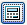
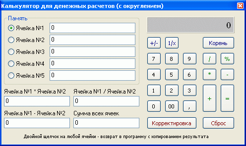

Калькулятор может быть вызван выбором соответствующего пункта подменю в главном меню «Улититы», кнопкой

(из тех окон, где эта кнопка имеется) или по «горячей клавише» F3 и позволяет производить математические операции, не прибегая к иным программам или устройствам. Кроме того калькулятор позволяет выполнить возврат в программу с копированием результата.
